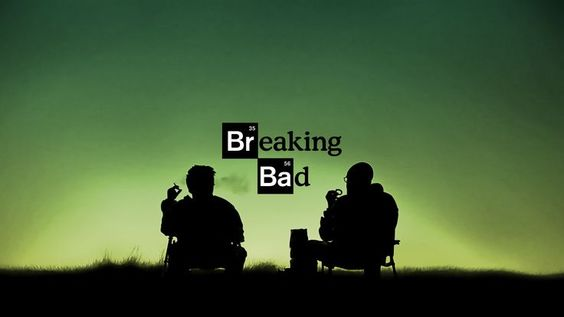

La quinta y última temporada de la serie de televisión dramática Breaking Bad se transmitió desde el 15 de julio de 2012 hasta el 29 de septiembre de 2013 por AMC en Estados Unidos y Canadá. La temporada consistió de 16 episodios, divida en 2 partes, con 8 episodios cada una. La primera parte se transmitió del 15 de julio de 2012 al 2 de septiembre de 2012, mientras que la segunda comenzó el 11 de agosto de 2013 y finalizó el 30 de septiembre de 2013.
La primera temporada de la serie iba a constar de trece episodios, pero debido a la huelga de guionistas de Hollywood se vio reducida a siete.
La segunda temporada de la serie de televisión estadounidense de drama Breaking Bad se estrenó el 8 de marzo de 2009 y concluyó el 31 de mayo de 2009.
La tercera temporada de la serie de televisión estadounidense de drama Breaking Bad se estrenó el 21 de marzo de 2010 y concluyó el 13 de junio de 2010.

La cuarta temporada de la serie de televisión dramática Breaking Bad comenzó el 17 de julio de 2011 y concluyó el 9 de octubre de 2011.
La quinta y última temporada de la serie de televisión dramática Breaking Bad se transmitió desde el 15 de julio de 2012 hasta el 29 de septiembre de 2013 por AMC en Estados Unidos y Canadá.
La temporada consistió de 16 episodios, divida en 2 partes, con 8 episodios cada una.